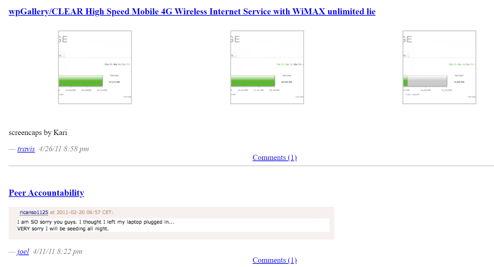
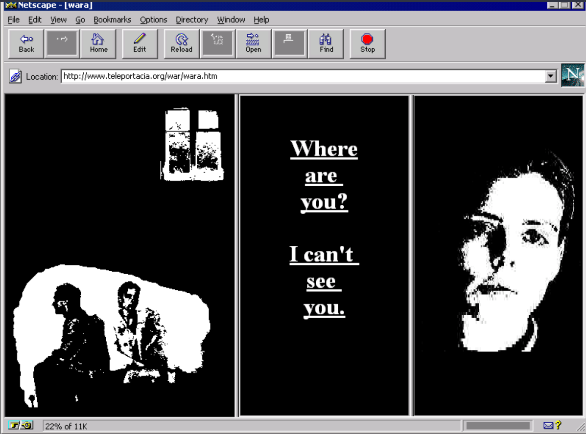
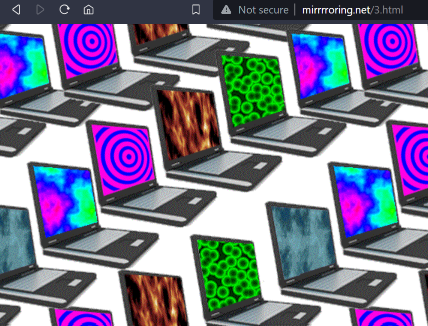
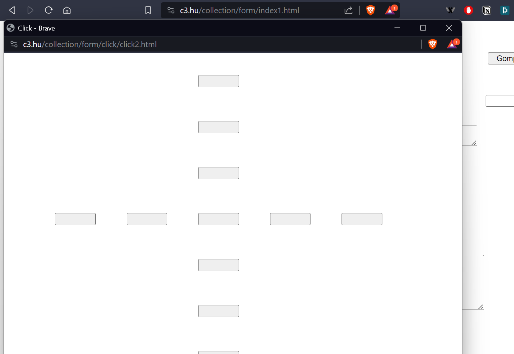
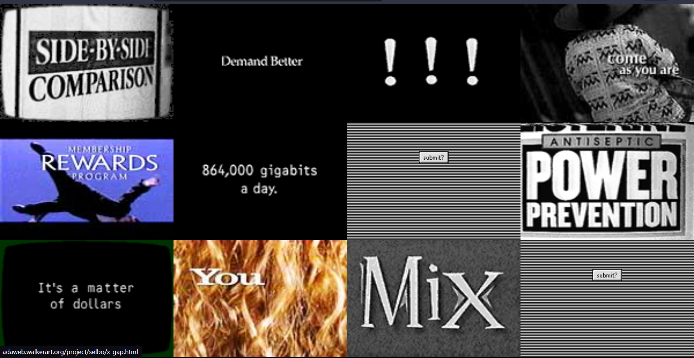
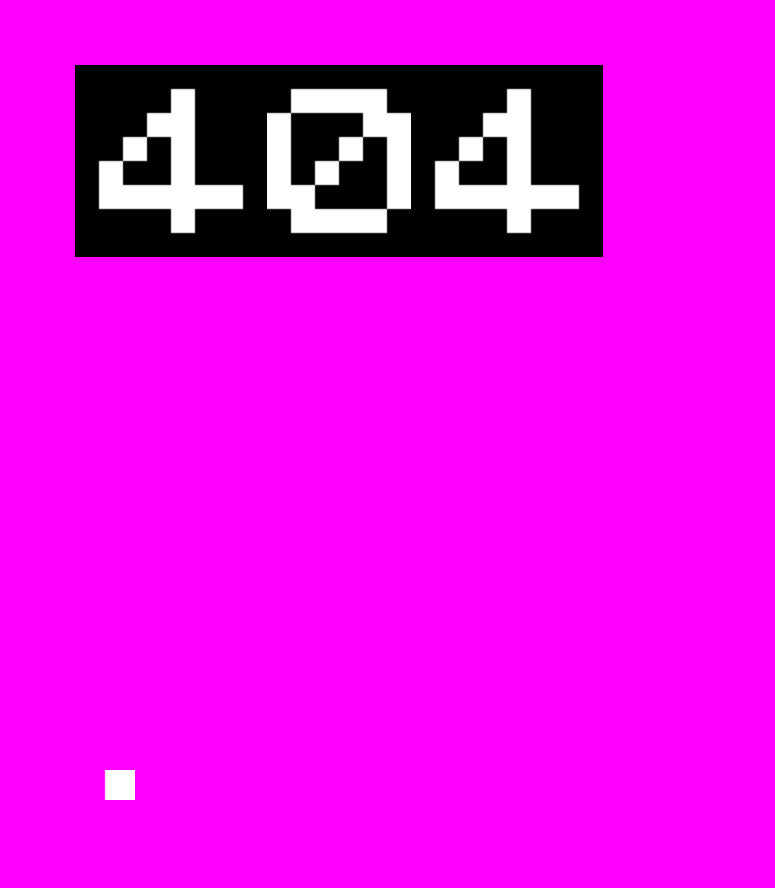
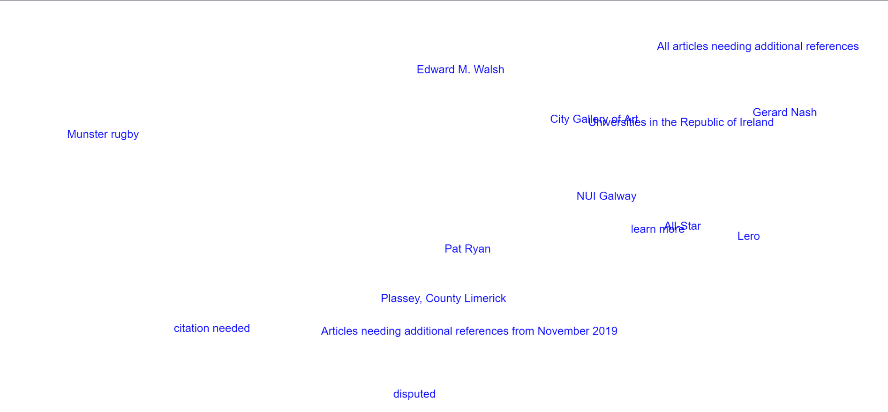
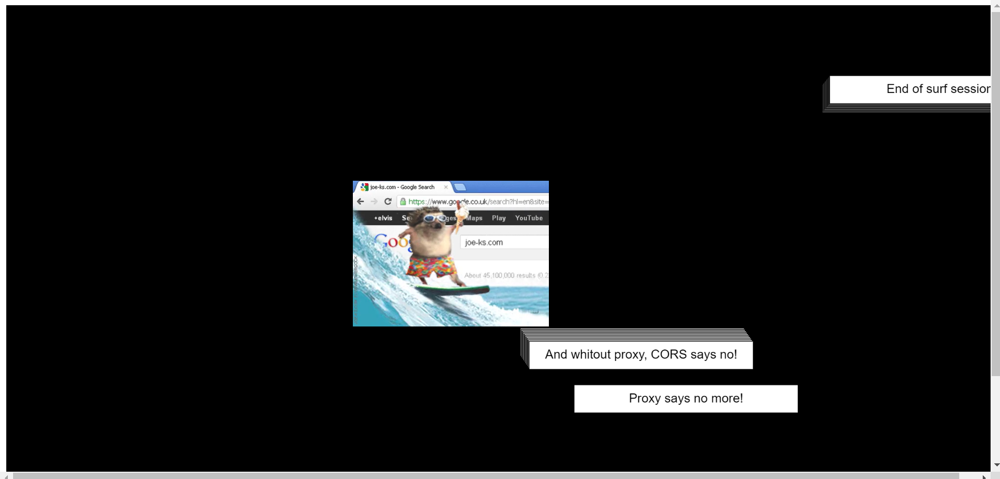

An interesting article about the net.art. Talking about Nasty Nets, among other works.
From Net.art to NFTs: A short history of Art and the InternetNasty Nets: "participants would remix, juxtapose and curate various decontextualized Internet artifacts together to make disjointed compositions. "
 Nasty Nets, April 2011Olia Lialina, My Boyfriend Came Back From the War, 1996
We interact with the work and discover a story. By clicking, we are guided by the author.
 My Boyfriend Came Back From the War, 1996"Mirrroring.net": A clickable series of outdated animations, already outdated functions and aesthetics of the "early" Internet circa 2000.
Once again, interaction with the work, and we can see that it's not random by looking at the URL of the site: the route is mapped out and we have to follow it.
 Mirrroring.netShulgin (1999) - Forms: "An interactive, formalist art site, which can be aimlessly navigated by clicking through blank boxes and links."
A work that intrigues me. There are a number of possible interactions, without necessarily having any particular intention, and there is no ending.
 FormVertical Blanking Interval, 1996 — Selbo's project for äda'web
I was already interested in this work at the beginning of this module because it combines several characteristics that I like. We interact with the site by clicking on images and in exchange, the image changes to another and it's hard to predict which one will appear. We can also access other parts of the site depending on the clicks we make, to discover an even bigger universe.
 Selbo's projectJODI: 404
An intriguing work which, to my mind, questions what a error is and how we can see it differently.
 https://404.jodi.org/Basic view for displaying links on a wikipedia page.

function displayContent() {
textSize(16);
textAlign(LEFT);
fill(0, 0, 255);
let maxLinks = min(links.length, 15);
for (let i = 0; i < maxLinks; i++) {
let linkText = links[i].text;
let x = linkPositions[i].x;
let y = linkPositions[i].y;
text(linkText, x, y);
}
}
How do I make another work based on a error...
